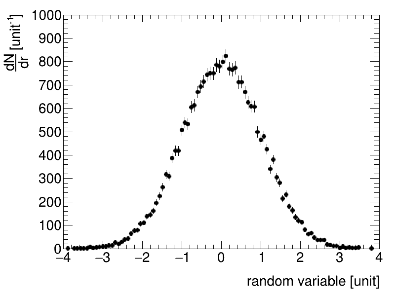

Setting the plotting style¶
This example demonstrates how to set the plotting style.
Script output:
specify style parameters with --name=value
Invalid style: `html`. Using the `ATLAS` style.
Python source code: plot_style.py
print(__doc__)
from rootpy.extern.argparse import ArgumentParser
parser = ArgumentParser()
parser.add_argument('style', default='ATLAS', nargs='?')
args, extra = parser.parse_known_args()
import ROOT
from rootpy.plotting import Canvas, Hist
from rootpy.plotting.style import get_style
from rootpy.interactive import wait
from rootpy.extern.six.moves import range
try:
kwargs = {}
for arg in extra:
name, value = arg.lstrip('--').split('=')
kwargs[name] = value
except ValueError:
print("specify style parameters with --name=value")
try:
style = get_style(args.style, **kwargs)
except ValueError:
print('Invalid style: `{0}`. Using the `ATLAS` style.'.format(args.style))
style = get_style('ATLAS')
# Use styles as context managers. The selected style will only apply
# within the following context:
with style:
c = Canvas()
hpx = Hist(100, -4, 4, name="hpx", title="This is the px distribution")
# generate some random data
ROOT.gRandom.SetSeed()
for i in range(25000):
hpx.Fill(ROOT.gRandom.Gaus())
hpx.GetXaxis().SetTitle("random variable [unit]")
hpx.GetYaxis().SetTitle("#frac{dN}{dr} [unit^{-1}]")
hpx.SetMaximum(1000.)
hpx.Draw()
wait()
Total running time of the example: 0.11 seconds